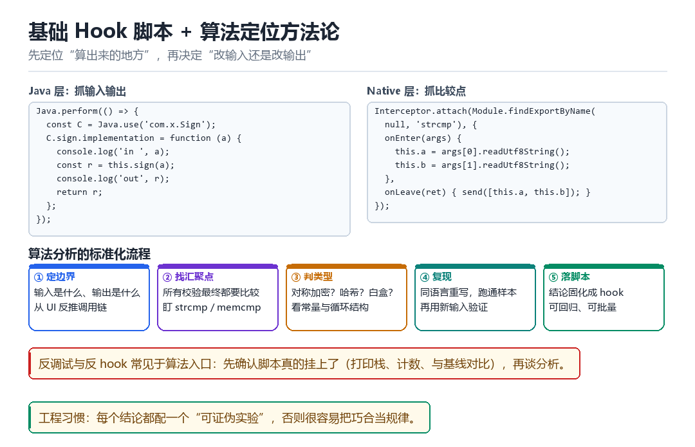

基础 hook 脚本、检测与算法分析
把工具用成方法论
先定位“算出来的地方”，再决定“改输入还是改输出”。
16.1 两个最小可用脚本

Java.perform(() => {
const C = Java.use('com.x.Sign');
C.sign.implementation = function (a) {
console.log('in ', a);
const r = this.sign(a); // 调原方法
console.log('out', r);
return r;
};
});Interceptor.attach(Module.findExportByName(null, 'strcmp'), {
onEnter(args) {
this.a = args[0].readUtf8String();
this.b = args[1].readUtf8String();
},
onLeave(ret) { send([this.a, this.b]); }
});16.2 算法分析的标准化流程
- 定边界：输入是什么、输出是什么。从 UI 反推调用链。
- 找汇聚点：所有校验最终都要比较，盯
strcmp/memcmp/equals。 - 判类型：对称加密？哈希？白盒？看常量与循环结构。
- 复现：用同语言重写，跑通样本，再用新输入验证。
- 落脚本：把结论固化成 hook，可回归、可批量。
| 线索 | 可能的算法 | 验证方法 |
|---|---|---|
| 常量 0x9E3779B9 | TEA / XXTEA 类 | 看轮数与移位 |
| 大量 32 位循环 + 异或 | 自研混淆 / 哈希 | 改一位输入看扩散 |
| S 盒数组（256 项） | AES / SM4 | 找轮密钥生成 |
| 64 位乘加链 | 哈希或签名 | 对比标准实现的输出 |
16.3 反调试的常见位置
反调试几乎总是出现在算法入口附近，因为那是最值得保护的地方。常见手法：检测 TracerPid、检测代码段 CRC、检测关键函数是否被改、检测执行耗时是否异常。
应对顺序：先确认脚本真的挂上了（打印栈、计数、与基线对比），再谈分析。很多“算法分析失败”，其实是 hook 根本没生效，分析的是未被修改的原逻辑。
16.4 第一部的收束
到这里，第一部的 16 章走完了一条完整的链路：从 boot.img 到内核启动，从 zygote 到 App 进程，从 linker 到 dex，从 hook 到检测。接下来的第二部会往下挖到内核，第三部会解剖 Frida，第四部会进入 KPM，第五部会拆 LSPosed。
先把地图画对，再谈走多快。
16.5 本章自测
- 写出一个“抓输入输出”的 Java hook 脚本。
- 算法分析的五个步骤是什么？
- 为什么“先确认 hook 挂上了”比“分析算法”更优先？
- 举一个“可证伪实验”的例子。
16.6 深入：一个完整的算法分析实战记录
目标：某 App 的请求签名。已知输入是“参数串 + 时间戳”，输出是一个 32 位十六进制串。
- 定边界：hook OkHttp 的
Request.Builder.build，拿到最终 URL 与 header，确认签名放在哪个字段。 - 找汇聚点：hook
MessageDigest.digest与String.equals，发现签名比较走的是equals。 - 抓输入：在
equals的两个参数上打点，拿到“本地算出的签名”和“服务端期望的签名”。 - 定位算法：回溯调用栈，找到计算函数，发现是
MD5(排序后的参数 + salt)。 - 验证：用 Python 复现，对 5 组样本全部匹配。
- 落脚本：把复现逻辑写成独立工具，不再依赖 hook。
import hashlib
def sign(params: dict, salt: str) -> str:
s = "&".join(f"{k}={params[k]}" for k in sorted(params))
return hashlib.md5((s + salt).encode()).hexdigest()
assert sign(case1, salt) == expected116.7 算法类型速判表
| 特征 | 可能算法 | 确认方法 |
|---|---|---|
| 输出 32 位 hex | MD5 | 换输入看是否雪崩 |
| 输出 40 位 hex | SHA1 | 同上 |
| 输出 64 位 hex | SHA256 | 同上 |
| 输出含 +/ 与 = | Base64 | 解码看是否可读 |
| 常量 0x9E3779B9 | TEA 系 | 看轮数与移位 |
| 256 字节表 | AES / SM4 | 找轮密钥 |
16.8 从“能用”到“可靠”
把结论写成脚本只是开始。要让它可靠，还需要：处理异常输入、加超时与重试、在版本变化时能快速定位差异、以及有办法验证“结果仍然正确”。
- 输入校验：空值、超长、特殊字符都要有明确行为。
- 回归样本：至少保留 10 组“输入 → 期望输出”，每次改动都跑。
- 版本探测：算法变了要能发现（比如输出长度变化、常量变化）。
- 降级路径：算法搞不定时，能不能退回“hook 直接取结果”。
16.9 原理推演：为什么“汇聚点”一定存在
因为校验必须“产生一个布尔结果”。无论中间做了多少变换、加了多少层，最终一定有一次“比较”或“分支”。这个比较点就是汇聚点。
| 校验形式 | 汇聚点 | 抓法 |
|---|---|---|
| 字符串比较 | strcmp / equals | hook 返回值 |
| 数值比较 | 条件分支 | 改寄存器 |
| 签名验证 | 验签函数返回值 | hook 返回 true |
| 哈希校验 | memcmp | 抓两个参数 |
所以“找汇聚点”是算法分析里性价比最高的一步：它把“理解全部逻辑”降级成“找到那一个比较”。
16.10 数据细节：常见签名的输出长度
| 算法 | 输出长度 | 特征 |
|---|---|---|
| MD5 | 32 hex | 最快，最常见 |
| SHA1 | 40 hex | Git、老系统 |
| SHA256 | 64 hex | 现代标准 |
| HMAC-SHA256 | 64 hex | 带密钥 |
| CRC32 | 8 hex | 校验用，非安全 |
看到输出长度就能排除一大半可能性。再结合“是否有密钥参与”（改一个字符看输出是否全变），基本能锁定算法族。
把签名函数追到最后一次比较
抓包里躺着一条请求：sign=8f14e45f...，32 位十六进制，每次换参数就变。你翻了半小时反编译代码，满屏都是 a、b、c 和跳转表，看不出个所以然。换个方向：不问「它怎么算的」，先问「它拿什么跟什么比」。在 equals 上挂一钩子，两条字符串同时打出来——一条是本地刚算出来的，一条是期望值——汇聚点一找到，算法类型十分钟内就能定下来。
这就是本部收束要留的方法论：先定边界（输入是什么、输出是什么），再找所有校验最终都要经过的那个比较点，最后才决定是改输入、改输出，还是干脆把整套算法复现出来。工具会换，顺序不会。
从一条请求到一份可复现结论
- 定边界 → 对抓包里的请求 → hook
OkHttp的Request.Builder.build，把最终 URL、header、body 全打出来 → 结果：确认sign放在哪个字段、输入串由哪几部分拼成。 - 找汇聚点 → 对
String.equals/strcmp/MessageDigest.digest→ 同时挂上 → 结果：定位到「本地算出的值」与「期望值」相遇的那一拍。 - 回栈 → 对
Java.use(...).implementation里打印的调用栈 → 沿栈帧往上找计算函数 → 结果：从混淆代码里捞出真正干活的那个方法。 - 判类型 → 对输出长度与常量 → 32 位 hex 想到 MD5、40 位想到 SHA1、
0x9E3779B9想到 TEA 系 → 结果：给出「可能是 XX」的假设，注意这只是假设。 - 复现 → 对同语言重写 → 用 5 组真实样本跑，逐组对输出 → 结果：假设被证实或被证伪，对不上就回去看拼接顺序与 salt，别硬凑。
- 落脚本 → 对结论 → 固化成独立工具 + 回归样本集 → 结果：不再依赖 hook，版本变了也能靠样本集立刻发现。
动手：先抓输入，再复现
// compare_probe.js（frida -U -f com.target.app -l compare_probe.js）
Java.perform(function () {
var S = Java.use('java.lang.String');
S.equals.implementation = function (o) {
if (this.length() === 32 && o !== null && String(o).length === 32) {
console.log('local =', this, 'expect =', o);
}
return this.equals(o);
};
});
# verify_sign.py —— 拿到 local / expect 后做可证伪实验
# import hashlib
# def sign(params, salt):
# s = '&'.join(k + '=' + params[k] for k in sorted(params))
# return hashlib.md5((s + salt).encode()).hexdigest()
# assert sign(case1, salt) == expect1 # 对不上就说明假设错了成功：compare_probe.js 打出成对的 local = ... 与 expect = ...，把 local 喂进 verify_sign.py 后 5 组样本全部 assert 通过——这才叫结论成立。失败要按拍分流：equals 一次都没打印，说明比较根本不走 Java 层，换 Interceptor.attach 挂 strcmp / memcmp；打印了但长度不是 32，别硬套 MD5，先看是不是 Base64（含 +/=）或 SHA256（64 位）；assert 挂掉是最有价值的结果——它明确告诉你「MD5(排序参数+salt)」这个假设错了，回去核对拼接顺序、编码方式与 salt 位置，而不是把输出强行截断对齐。另外别忘了先确认脚本真挂上了：随便触发一次已知调用，看钩子有没有计数，很多「算法分析失败」其实是 hook 根本没生效。
| 线索 | 先想到的假设 | 一条可证伪实验 |
|---|---|---|
| 32 位 hex | MD5 | 换 1 位输入看是否完全不同（雪崩） |
| 64 位 hex | SHA256 | 同输入跑标准库逐字节比 |
| 含 +/ 与 = 结尾 | Base64 | 解码看是否可读 / 是二进制 |
| 常量 0x9E3779B9 | TEA / XXTEA | 数轮数与移位方向 |
| 256 项 S 盒 | AES / SM4 | 找轮密钥生成与轮数 |
| local 与 expect 始终相等 | 抓的是同一份值 | 回栈确认是不是比较点选反了 |
到这里，第一部的十六章走完了一整圈：第 01、02 章从 boot.img 与启动链拿到内核执行能力，第 05、06 章看清进程与 so 怎么落地，第 07~10 章把注入与 hook 装进去，第 04、11 章转过身来定义怎么发现它们，第 12~14 章下探到 ART 与 dex，最后两章把工具收成方法论。本章这个「先定边界、再找汇聚点、用可证伪实验收口」的顺序，会在第二部挖内核、第三部解剖 Frida、第四部写 KPM、第五部拆 LSPosed 时被原样复用——换的只是被观测的对象，不换的是这条把猜测逼成证据的路。